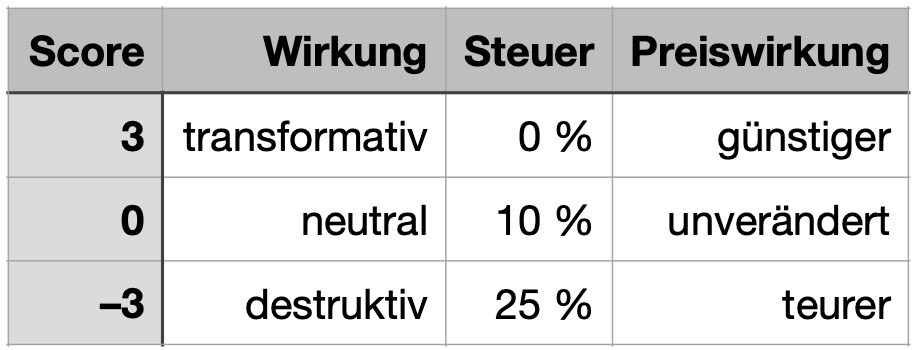

Werte - das gute Wollen
Wir reden viel über Werte: Verantwortung, Nachhaltigkeit, Gerechtigkeit. Unternehmen schreiben sie in Leitbilder, Politiker:innen in Programme, Konsument:innen in Profile. Doch Werte bleiben häufig folgenlos, weil sie nicht in die Mechanik des Systems eingebettet sind. Der Markt reagiert nicht auf Worte, sondern auf Anreize. Ein T-Shirt aus Kinderarbeit ist heute günstiger als ein faires Bio-Shirt - obwohl seine reale Wirkung auf Mensch und Planet verheerend ist.
Wirkung - das gute Wirken
Wirkung schließt diese Lücke. Sie fragt nicht, wer recht hat, sondern was tatsächlich wirkt. Wirkung ist die messbare Folge unseres Handelns auf Menschen, Umwelt und Demokratie. Sie macht Ethik überprüfbar: Wenn CO₂-Emissionen sinken, Wasser geschont, faire Löhne gezahlt oder Vertrauen gestärkt wird - dann ist das Wirkung. Damit wird Moral von einer Haltung zu einer Kenngröße. Wirkung ist der Realitätscheck der Werte.
Preise, die die Wahrheit sagen
Heute zeigen Preise nur Kapitalaufwand, nicht Wirkung. Sie belohnen Zerstörung, weil sie billiger scheint, und bestrafen Verantwortung, weil sie Aufwand kostet. Das ist kein Markt, sondern ein Rechenfehler.
In der Wirkungsökonomie wird dieser Fehler korrigiert: Produktpreise spiegeln künftig ihre reale Wirkung wider. Das geht, weil die Daten längst vorhanden sind - aus Nachhaltigkeitsberichten (CSRD, ESRS, GRI). Ein Produkt erhält einen Wirkungs-Score (-3 … +3), der direkt mit seiner Steuer und damit seinem Preis verknüpft ist:

Ein regionaler Bio-Apfel zahlt dann weniger Steuer als ein importierter Apfel aus Chile. Ein Unternehmen, das Wasser spart und fair bezahlt, hat sofort einen Kostenvorteil. Wirkung wird zum Wettbewerbsvorteil - nicht zum Kostenfaktor.
Wirkung als neue Ehrlichkeit
Wenn Preise Wirkung zeigen, wird Verantwortung sichtbar. Werte hören auf, Marketing zu sein, und werden Teil der ökonomischen Realität. Politik muss weniger verbieten, Unternehmen müssen weniger werben - weil der Markt selbst nach Wahrheit strebt. Das ist kein moralisches, sondern ein mathematisches Prinzip:
Wer Wirkung erzeugt, zahlt weniger. Wer zerstört, zahlt mehr.
Werte sind wichtig, aber Wirkung ist entscheidend. Denn erst wenn wir Wirkung messen, wird sichtbar, was Dinge wirklich wert sind. So entsteht ein Markt, der das Richtige belohnt - nicht nur das Billige.
Werte sind das Warum. Wirkung ist das Wie. Der Preis ist das Was - und er lügt nicht mehr.